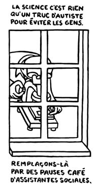
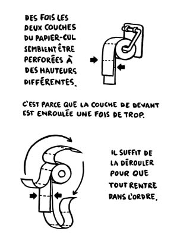
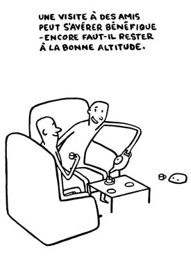
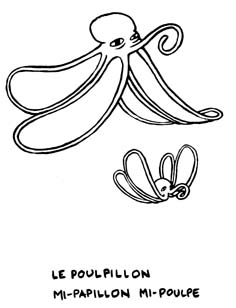

Dessins tirés de 'mes meilleurs jésus', destinés aux journalistes qui veulent bien chroniquer l'album.
Les liens pointent sur des images avec une résolution suffisante pour être imprimés.
|  télécharger |
télécharger |
 télécharger |
 télécharger |
 télécharger |